Making Meta's WhatsApp Business tools easy for any business to use.
Meta's WhatsApp Business Platform can do a lot: customer chats, automation, campaigns and business messaging. But having the technology is not the same as having a product people can use.
I was the only product designer at Transket. My job was to take what Meta offered and shape it into one product that businesses could understand without help. That covered customer messaging, campaigns, automation, analytics and several business portals. In every flow, I tried to keep things simple without taking away anything the platform could do.
Challenge statementMost of my work wasn't inventing new features. It was working out how Meta's existing features should fit together, so businesses felt confident using them. I also kept improving the product as customer needs changed and Meta kept releasing new features and updates.
Businesses in Canada needed a better way to handle customer chats and their growing day-to-day work. But most tools in this space are complicated, and people who aren't good with technology struggle to learn them. Our goal was to put powerful features into one product that still felt easy to learn and use.
Below is the full story, with the reasons behind each decision.
Meta provides the technology underneath: the messaging system, message templates, the rules about what can be sent and when, and the message reports. Transket didn't build any of that, and I'm not claiming it did.
But technology on its own isn't a product. Meta's system is built around technical things like templates, variables, media settings and recipient lists. A business owner just thinks, "send this offer to these customers tomorrow." My job was to design the part in between, so nobody has to think like a developer to get their work done.
Meta provides the technology. Transket's job is to turn it into simple workflows a business can actually use.
Transket lets businesses use WhatsApp properly for work: chat with customers as a team, send campaigns, automate replies and see what happened afterwards. All the messaging itself runs on Meta's WhatsApp Business Platform, along with its templates, rules and limits.
It was never just one feature. As the product grew, my work covered four main areas. Each new area was also a test of whether my earlier decisions still worked.
Transket grew from a messaging tool into a full product for talking to customers, reaching them, understanding results and running the business.
How do we take a powerful but technical WhatsApp platform and make it feel simple and familiar for everyday business owners?
The Canadian market added another challenge. I couldn't assume every user would already understand WhatsApp Business terms like templates, campaigns, variables or API messaging. Some would, but many wouldn't. So the product had to work for people who know their business well, even if they don't know how the platform works.
“I want to send this offer to these customers tomorrow.”
Select a template → resolve template variables → configure media → define recipients → schedule the campaign.
Most of my design work happened in that gap between what users want to do and how the platform is built. To close it, I needed a few clear rules I could use everywhere.
Simplifying didn't mean removing things. The platform's requirements are real, and people need them. It meant thinking about when and how people come across each one. Instead of deciding screen by screen, I set four principles early and checked every decision against them.
For most users, Transket was their first time using WhatsApp for business. Keeping things close to normal WhatsApp meant they already knew how to read and reply to a chat.
Ask for one decision at a time and show the rest when it's needed. A few clear steps are easier than one crowded screen.
Features for larger companies shouldn't make the product harder to use. Even advanced tools should make sense to a first-time user.
Customer, Enterprise, Admin and Partner portals are all one product. Something you learn in one should work the same way in the others.
Behind these four was one simple test I used on every screen: keep what the user needs, and make it easier to get to. Here's how that worked in practice.
Don't show everything at once. Each step in a flow should ask for one kind of decision.
If one choice depends on another, the steps should follow that order. Pick a template first, then see what that template needs.
If people already know a way of doing something, especially from WhatsApp, use it so there's less to learn.
Extra buttons are there to help with the main task, not to distract from it.
Advanced settings only appear when they're actually needed.
Users should always know where they are, what they selected, what has happened, and what happens next.
One crowded screen can be harder to use than a few clear steps. I aimed for each step to be easy to understand, not for the fewest clicks.
Empty, loading, error, success, disabled, no results, half done and confirmation. Every flow was designed for all of these, not just the ideal case.
Keep everything the user needs, but show it only when they need it.
Almost everyone who uses Transket already knows WhatsApp. They know how the chat list works, where to type a message and what the little ticks mean. I didn't have to teach any of that. So instead of inventing a new way to message, I built on what people already knew and used it as the way into a bigger business tool.
But WhatsApp was a starting point, not something to copy. Business teams need things normal WhatsApp doesn't have, like shared chats, assigning chats, customer details, tags, quick replies, filters and teamwork. So the real question was:
How do we add business features without losing the feel of WhatsApp?
Transket feels like WhatsApp where that helps, and adds business tools around the conversation instead of on top of it.
I looked at the main WhatsApp Business tools: Gallabox, AiSensy, Wati and a few others. They all use the same Meta technology, so comparing feature lists wouldn't tell me much. Instead, I looked at how each one turned those features into something people actually use:
The pattern I kept seeing: too many choices thrown at people at once. So in Transket I broke the harder tasks into clear steps, and showed each thing only when it mattered.
Powerful products that showed everything at once. Template, variables, media, audience and scheduling all sat on one crowded screen, and the main button was hard to find.
Steps that depended on each other weren't explained, errors only showed up after you hit submit, and there was no clear sense of progress. Users had to keep track of everything themselves.
I split the setup by the decision you're making, put the steps in the order they depend on each other, and moved checks earlier so mistakes show up right where you make them.
All the features, and the familiar WhatsApp feel. The goal was to put things in a better order, not to remove features or change what people already knew.
Offer the same features as competitors, but show them in a clearer order.
Competitors offered the same features. Transket stood apart by showing them in a clearer order, one step at a time.
These aren't here to show I made many versions. They're here to show my thinking. Each one covers what I noticed, what I changed, why, and what I gave up for it.
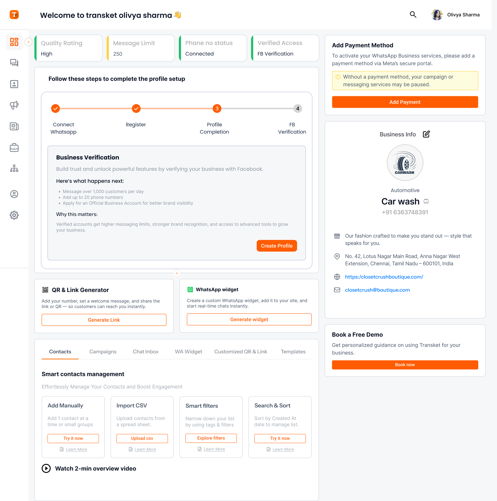
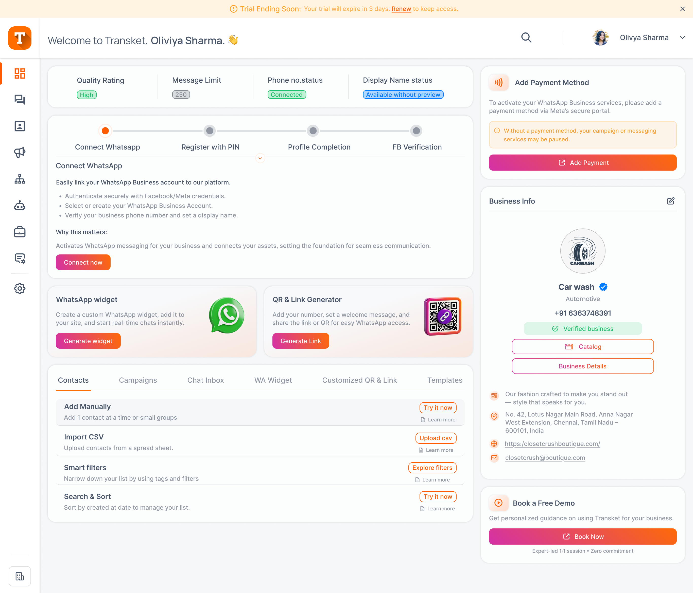
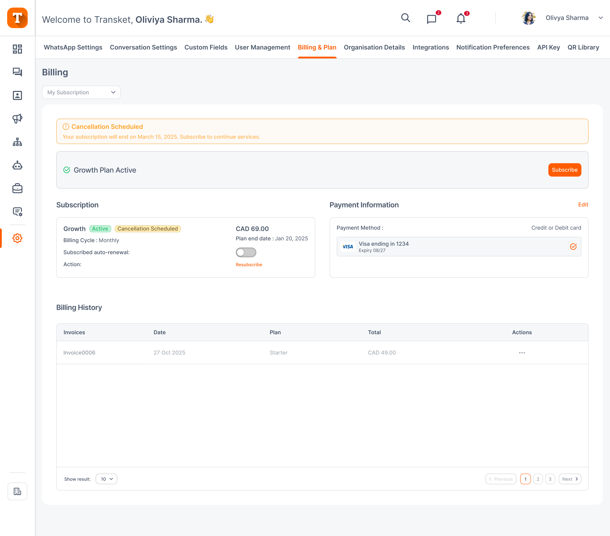
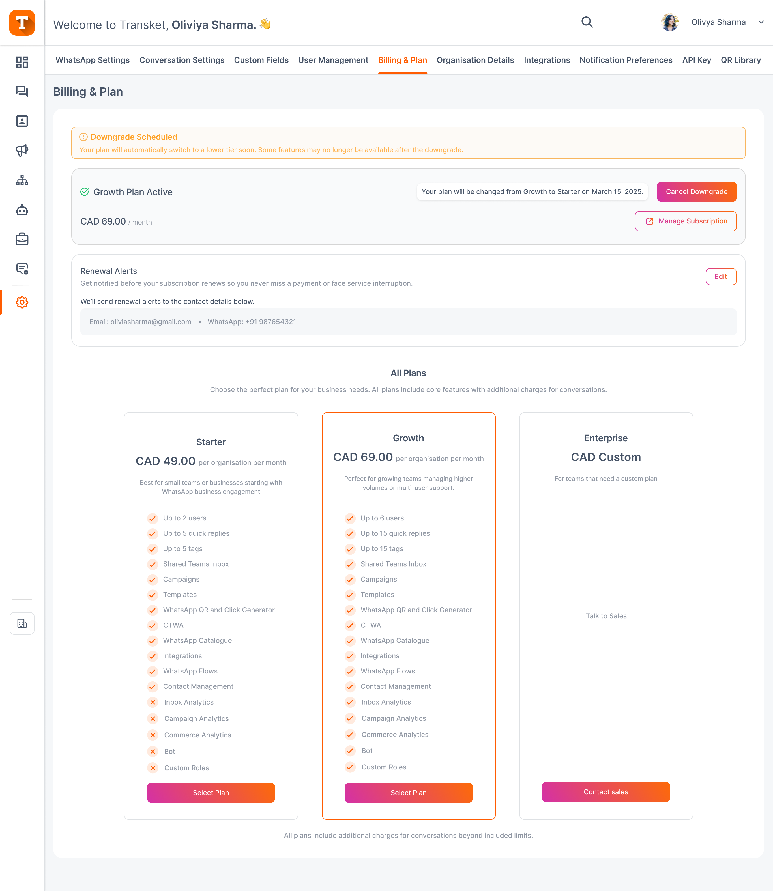
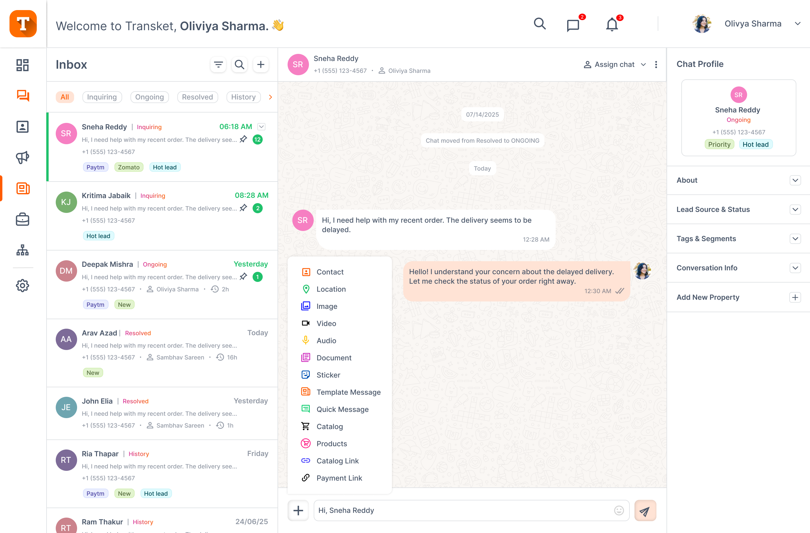
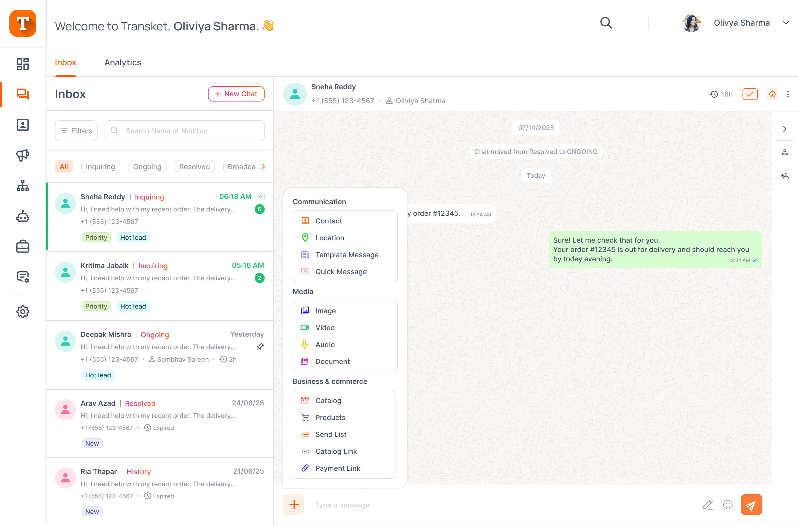
These two decisions changed how the product grows and keeps its users. Each one shows why we made the call and what it changed.
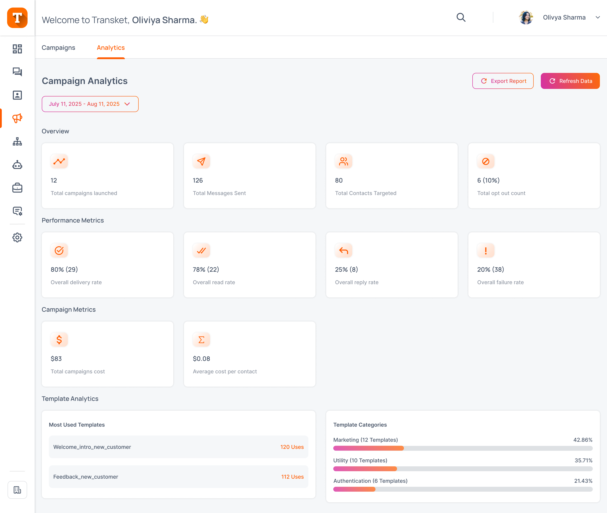
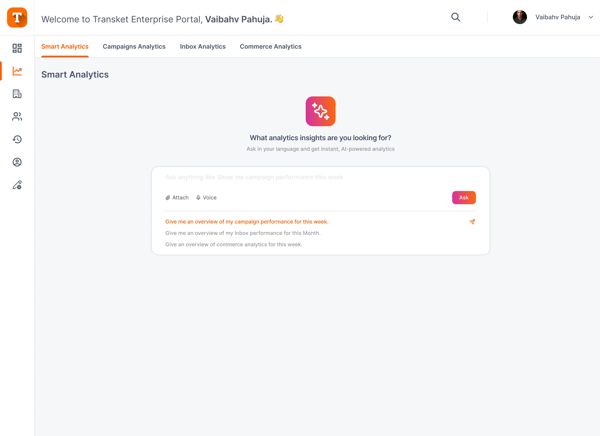
Smart Analytics turned analytics into an upgrade path. Businesses start with the regular analytics. Once they run several organizations, the Enterprise plan gives them one place to see and ask about all of them. That gives the bigger plan a clear, visible reason to exist, and makes it easier to explain and to sell.
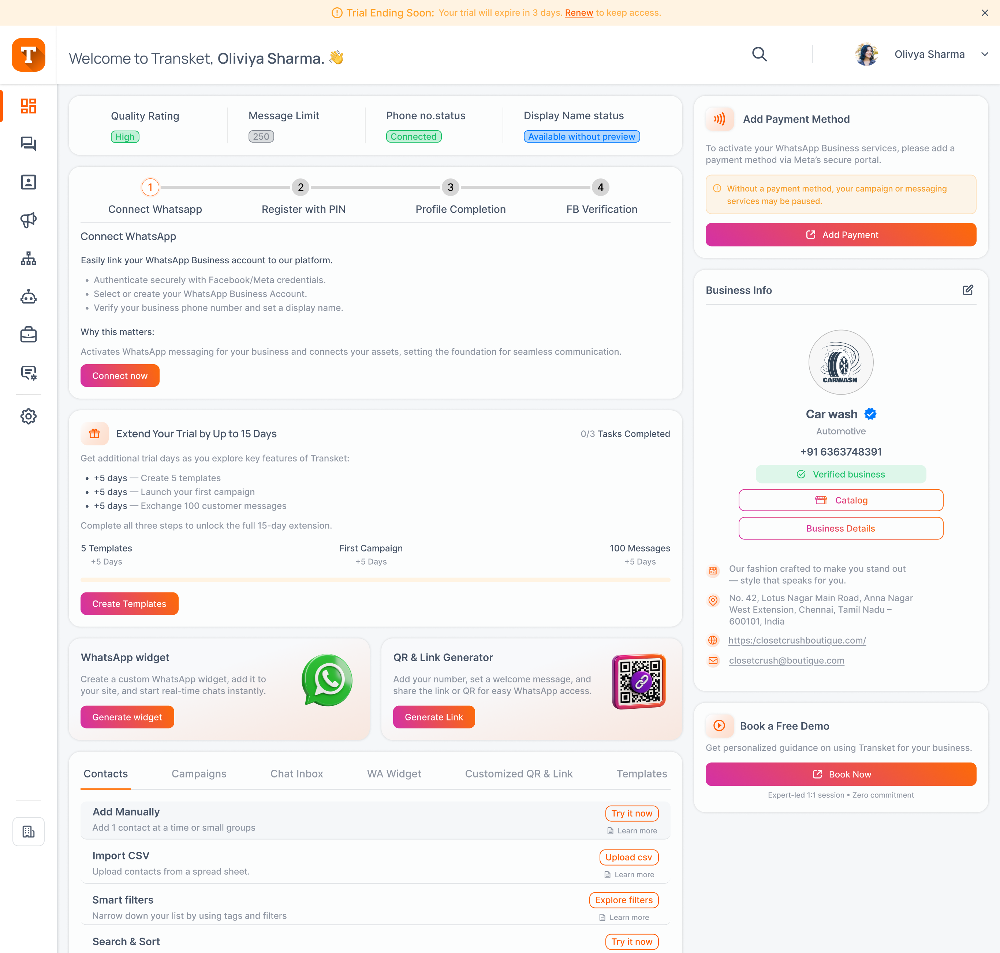
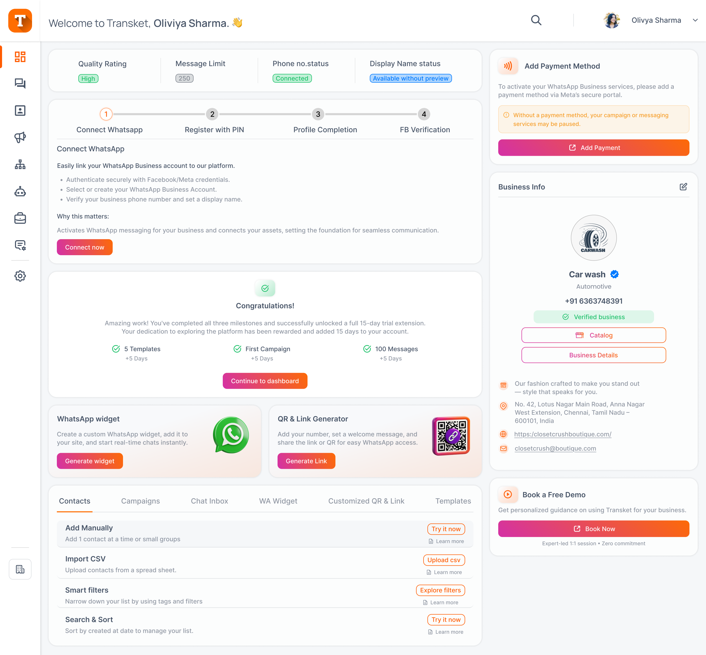
Even users who were just exploring got a clear idea of how Transket works, because they had built templates, run a campaign and handled chats themselves. Once the product made sense to them, buying a plan was the natural next step, and many of these trial users went on to renew.
Every change here, big or small, was made to make the product easier to use or easier to grow with.
As Transket grew, one dashboard couldn't work for everyone anymore. Customers ran several brands, partners brought in new clients, and our own team needed to run things behind the scenes. Adding more to one screen wasn't the answer. We needed structure: organizations to keep each customer's businesses separate, and portals so each group gets a space built for their job.
Growing customers rarely run one business. They run brands, regions or franchises (Barktee, Transket India and Transket US in the example below), each with its own contacts, campaigns, team and billing. Keeping all of that in one account made reporting messy and permissions risky. Separating them into organizations under one enterprise account let a business manage every brand from one login while keeping each brand's data and team apart.
Managing more than one organization brings a new risk. You can do everything right, with the right campaign, audience and timing, but in the wrong organization. Every screen in the enterprise view has to guard against that.
How do we always show which organization you're in, without cluttering the screen?
I stuck to a few simple rules. The current organization is always on screen, in the same spot, so you never have to remember it. Switching is a clear action with clear feedback, not a quiet dropdown change you might miss. The organization stays the same as you move around the product. And each organization has its own permissions, because the same person can have different access in different organizations, and the screen has to show that without making them think about it.
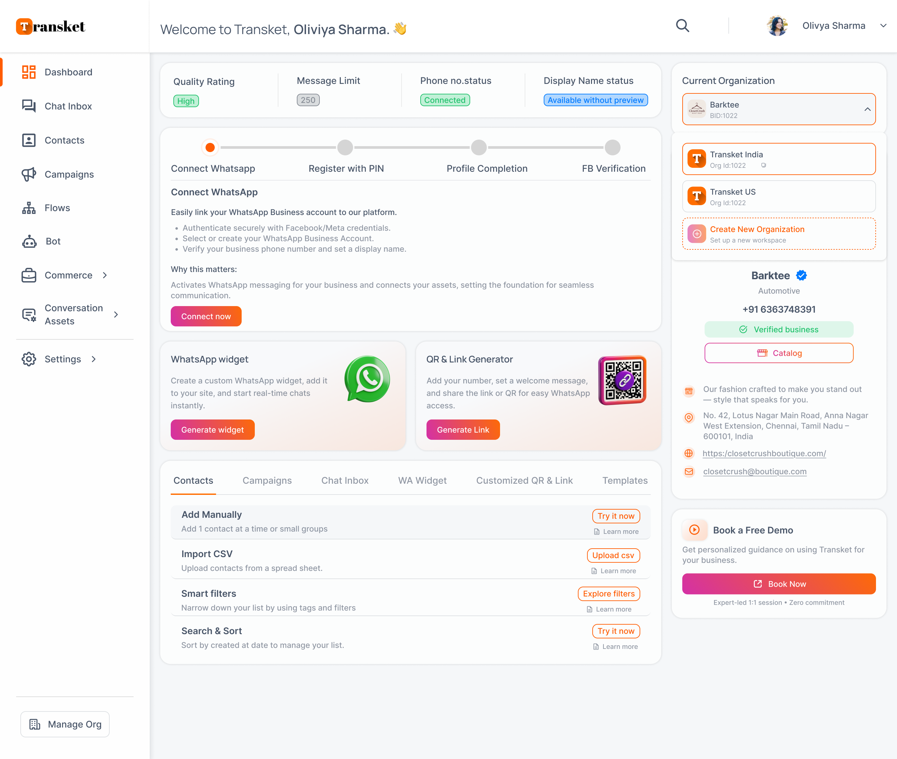
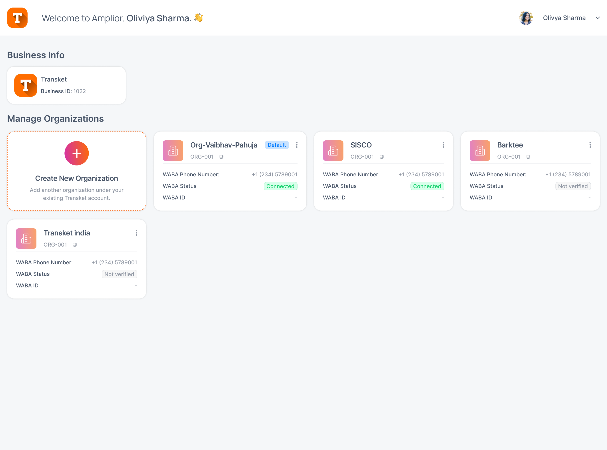
The second part was splitting things by who uses them. Each portal exists because a different group looks after a different part of the business, and one shared dashboard wouldn't have worked well for any of them.
Splitting things up this way was a trade-off. It meant more to design and maintain, but each group only sees what their job needs. What kept five portals manageable was keeping them consistent: the same layout, the same components and the same status labels everywhere. Only the order of information changes, so each person sees their own work first.
Organizations and portals let one product serve every kind of user and business, without becoming harder for any of them.
When I started at Transket, I thought feature by feature: how do we build this, how do we make it look good, how do we make it catch attention? By the end, my first question had changed to a simpler one: how do we make this easier?
If I started again: I would set up shared components and styles much earlier. A lot of my later work depended on them, and having them sooner would have saved us a lot of time.
Designing on top of a powerful platform is a translation job. Meta provides the capability; the business has a goal. My job was to make the gap between them easy to cross.